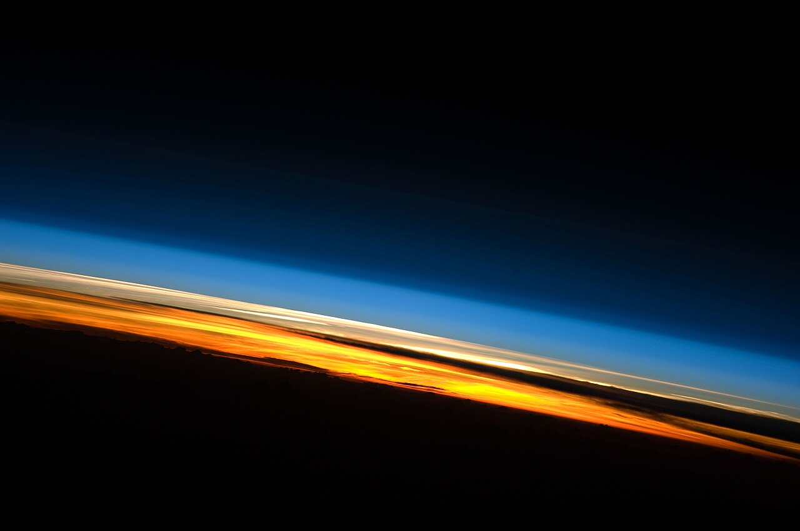

동기 유발
지구를 감싼 얇은 막, 대기
교과서 p. 84학습 목표
- 대기를 구성하는 기체들이 선택적 흡수체임을 설명할 수 있다.
- 지구 생명체의 존재 조건을 추론할 수 있다.

NASA, 퍼블릭 도메인

NASA ISS Expedition 23, 퍼블릭 도메인
눈에 보이지 않는 얇은 대기층이 지구를 감싸고 있다.
대기는 무엇으로 이루어져 있고, 어떻게 생명체를 지킬까?
대기는 무엇으로 이루어져 있고, 어떻게 생명체를 지킬까?
생명체의 호흡·광합성에 필요한 성분과, 생명체를 위협하는 요소(자외선, 극심한 온도 변화 등)를 함께 떠올리게 합니다. 교과서 운영안은 2차시(대기의 구성·선택적 흡수 / 생명체의 존재 조건)입니다.
핵심 개념 1
지구 대기의 구성과 선택적 흡수
교과서 p. 84 ~ 85(1) 대기는 무엇으로 이루어져 있을까?
- 대기의 구성은 시간과 장소에 따라 조금씩 다르지만, 대부분은 질소와 산소이다.
- 양은 적지만 지구시스템에 큰 영향을 주는 수증기, 이산화 탄소, 오존 등도 들어 있다.
질소 78%산소 21%아르곤 0.93%, 이산화 탄소 0.04%, 기타 0.03%
(2) 대기는 '골라서' 흡수한다
- 선택적 흡수체: 특정 파장의 복사 에너지는 흡수하고, 다른 파장은 통과시키는 물질. 지구 대기가 그렇다.
- 태양 복사(표면 약 5800 K): 감마선부터 전파까지 다양한 파장, 가시광선 부근에서 가장 강하다. / 지구 복사(평균 약 288 K): 대부분 적외선
- 오존·산소: 파장이 짧은 자외선을 흡수 / 수증기·이산화 탄소 등: 파장이 긴 적외선을 흡수 / 가시광선: 거의 흡수되지 않고 지표까지 도달
- 수증기·이산화 탄소 등은 지구 복사(적외선)를 흡수했다가 지표로 다시 내보내 지표 온도를 높인다. → 온실 효과
- 대기의 창: 파장 8~13 μm 영역의 지구 복사는 대부분 흡수되지 않고 우주로 빠져나간다.
시뮬레이션 1태양 복사·지구 복사와 대기 성분의 흡수
위: 태양과 지구의 복사 세기(각각의 최댓값을 같게 맞춤). 아래: 대기 전체의 흡수율. 흰 막대를 움직여 자외선·가시광선·적외선과 대기의 창에서 어떤 기체가 흡수하는지 확인하자. 흡수율 곡선은 개략적으로 단순화한 것이다.
핵심 개념 2
지구 생명체의 존재 조건
교과서 p. 86 ~ 87(1) 생명 가능 지대
- 생명체가 존재하려면 에너지를 안정적으로 공급하는 별이 있어야 하고, 행성 표면에 액체 상태의 물이 있어야 한다.
- 생명 가능 지대: 별 주위에서 액체 상태의 물이 존재할 수 있는 거리의 범위
- 주계열성의 질량이 클수록 광도가 커져 생명 가능 지대가 별에서 멀어지고 폭도 넓어진다.
- 태양계의 생명 가능 지대는 현재 금성과 화성 사이에 있다. 하지만 생명 가능 지대 안에 있다고 해서 반드시 생명체가 있는 것은 아니다.
시뮬레이션 2중심별에 따라 달라지는 생명 가능 지대
질량을 1(태양)로 두고 광도를 올려 보자. 태양이 지금보다 밝아지면 생명 가능 지대는 어떻게 될까? 행성 배치는 태양계 기준이며, 경계값은 단순화한 추정이다.
(2) 지구에서 생명체가 살 수 있는 까닭
- 액체 상태의 물: 지구는 태양에서 1 AU 떨어진 거의 원 궤도를 돌며, 표면에 물이 풍부하다.
- 비열이 커서 쉽게 데워지거나 식지 않는다.
- 여러 물질을 잘 녹여 생명 활동에 유리하다.
- 얼음이 물보다 밀도가 작아 수면부터 얼므로, 겨울에도 물속 생물이 살 수 있다.
- 대기: 지구는 크기와 중력이 적당해 대기를 붙잡아 둔다. 대기는 생명 활동에 필요하고 해로운 복사를 막아 준다.
- 오존층: 성층권의 오존층이 자외선을 흡수한다. 자외선은 동물의 유전자를 변형시키고 식물의 엽록소를 파괴할 수 있다.
- 온실 효과: 온실 기체가 지표에서 나간 적외선을 붙잡아 지구의 평균 표면 온도를 약 15 °C로 유지한다.
자체 제작
탐구 활동
지구 생명체의 존재 조건 추론하기
교과서 p. 86해 보기 · 생명은 왜 바다에서 시작해 육지로 나왔을까?
지구에는 액체 상태의 물이 풍부하다.
지구는 여러 기체로 된 적당한 두께의 대기를 가지고 있다.
최초의 생명체는 바다에서 나타났고, 뒤에 육지로 진출했다.
1. 액체 상태 물의 특성을 조사하고, 최초의 생명체가 바다에서 나타난 까닭을 설명해 보자.
물은 여러 물질을 녹이는 좋은 용매이고, 비열이 커서 온도가 쉽게 변하지 않는다. 또 얼음이 물보다 가벼워 표면부터 언다. 이런 성질이 생명체가 나타나고 진화하기 좋은 환경을 만들었다.
2. 바다의 생명체가 지구 곳곳으로 진출하는 데 대기는 어떤 역할을 했을까?
대기 중에 오존층이 생겨 자외선을 흡수하자 생명체가 육지로 진출할 수 있었다. 또 대기의 온실 효과가 생명체가 살기에 알맞은 기온을 유지해 주었다.
3. 지구에서 생명체가 생기고 존재할 수 있는 조건을 추론해 보자.
태양과의 거리가 적당해 액체 상태의 물이 풍부하고, 오존층이 해로운 자외선을 막아 주며, 온실 효과로 생명체가 살기 알맞은 온도가 유지되기 때문이다.
스스로 확인하기
1. 지구 대기를 구성하는 기체들이 선택적 흡수체임을 설명해 보자.
오존과 산소는 자외선을, 수증기와 이산화 탄소 등은 적외선을 골라 흡수하고, 가시광선은 거의 흡수하지 않고 통과시킨다. 이처럼 특정 파장만 흡수하므로 선택적 흡수체이다.
2. 오존층은 지구 생명체에게 어떤 역할을 할까?
유전자를 변형시키거나 엽록소를 파괴하는 등 해로운 자외선을 흡수해, 자외선이 지표까지 오는 것을 막아 생명체를 보호한다.
3. 창의력 더하기 · 태양의 광도가 커진다면 생명 가능 지대는?
지금보다 태양에서 더 먼 곳으로 이동하고 폭도 넓어진다. (시뮬레이션 2에서 광도를 올려 확인해 보자.)
형성 평가
개념 확인 문제
그림 출처
사진은 NASA의 퍼블릭 도메인 자료입니다. 모식도와 시뮬레이션은 직접 만들었으며, 흡수율 곡선과 생명 가능 지대 경계는 단순화한 근삿값입니다.